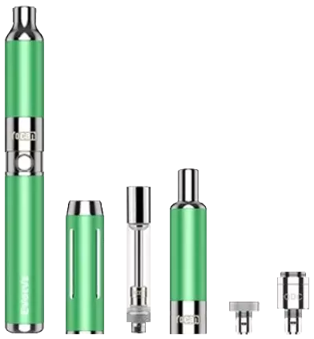

Cleaners
-

Formula 420 Original
Formula 420 for Pyrex, Glass, Metal and Ceramic is the original complete 1 minute cleaner. Exclusive AbrasivAction technology eliminates the need for soaking and scrubbing.
12OZ | 4OZ TRAVEL SIZE | 2OZ MINI
Hassle Free
Easy to Use
Non-Toxic*
Biodegradable
Cleans and Deodorizes In Seconds
GLASS, METAL, PYREX AND CERAMIC SURFACES ONLY -

Formula 420 All Natural
For those of you who demand an all natural product Formula 420 offers the All Natural Cleaner. Naturally, the best way to clean your piece!
16OZ | 4OZ TRAVEL SIZE
Hassle Free
Easy to Use
Non-Toxic*
Biodegradable
Cleans and Deodorizes In Seconds
GLASS, METAL, PYREX AND CERAMIC SURFACES ONLY -
Formula 420 Daily Use
This quality product was formulated with Formula 420’s loyal customers in mind. Now it is more affordable for to keep your pieces clean daily. Concentrated – Just add water! – 45% More Free! 32oz at the 22oz Price!
16OZ
Hassle Free
Easy to Use
Non-Toxic*
Biodegradable
Cleans and Deodorizes In Seconds
GLASS, METAL, PYREX AND CERAMIC SURFACES ONLY -
Formula 420 Plastics / Silicone
Formulated especially for use on Plastics & Silicone items, complete with our exclusive AbrasivAction™ technology.
16OZ | 4OZ TRAVEL SIZE
Hassle Free
Easy to Use
Non-Toxic*
Biodegradable
Cleans and Deodorizes In Seconds
PLASTICS AND SILICONE ONLY -
Formula 420 Soak -N- Rinse
Formula 420 exclusive No-ScrubAction™ Cleaning Technology eliminates the need for shaking or scrubbing. Formulated for smaller items Formula 420 Soak-N-Rinse is the perfect complement to all other Formula 420 Products.
16OZ
Hassle Free
Easy to Use
Non-Toxic*
Biodegradable
Cleans and Deodorizes In Seconds
GLASS, METAL, PYREX AND CERAMIC SURFACES ONLY -
Randy's Black Label
Black Label is a lightning fast resin and goo cleaning solution for any metal, glass, or ceramic smoking utensil. Just apply Black Label to any piece, shake, and let it soak for a few minutes before rinsing out in warm water. In no time Randy’s Black Label will have your piece looking good as new, and performing like the day you pulled it off the shelf.
Lightning Fast on Resin & Goo
Cleans Glass, Metal , and Ceramic Pieces
12OZ | 6OZ -
Randy's Orange Label
Randy’s Orange Label Cleaner is our first All-Natural Citrus Cleaner. This Natural Citrus Degreaser is capable of cleaning Silicone, Glass, Metal, Ceramic, Wood, and Acrylic. Simply add Orange Label cleaner to your product, swirl cleaner around your piece, let it soak for a short period of time, and then rinse out the debris. Your smoke-ware will look like the day you pulled it off the shelf!
Natural Citrus Cleaner
Cleans Silicone, Glass, Metal, Ceramic, Wood, and Acrylic
As Simple As: Soak. Swirl. Rinse
12OZ | 6OZ -
Randy's Green Label
This earth friendly glass cleaner is simple to use. Just fill the glass item to be cleaned and make sure you block any orifices to prevent leaking or put the glass piece in a container and cover with the solution. Let the item soak until clean. No more shaking or swirling. Rinse the item thoroughly in warm water after soaking. To reuse the solution just filter out the solid particles and rebottle the cleaner. Discard it when it is no longer effective. Randy’s Green Label is THE environmentally friendly and biodegradable glass cleaner of choice.
Reusable Cleaner
Earth-Friendly
Effective on Glass, Wood, Metal, and Acrylic
12OZ
Electronic Devices
-
Ooze Slim Pen Twist
Features a dial on the bottom that twists to select a precise voltage between 3.3-4.8V. Auto safety shut off after 15 seconds of inhaling to protect against overheating. Preheat mode will heat for 15 seconds without needing to press the button down.
Ooze 320 mAh Battery
Various Colors
Preheat mode
Adjustable Voltage: 3.3V - 4.8V
15 Seconds Hold Time
Fits all 510 Thread
USB Smart Charger
Smart USB Rapid Charge
Auto Safety Shut off
Preserves Battery Cells -
Yocan Evolve Plus
The Yocan Evolve Plus Vaporizer has been famous for its simple and minimalist design with fast and quick results as well as its easy and straightforward operation. Even a beginner or a novice can pick up an Evolve Plus and vape like a pro. That’s why it's one of the most sought-after dab pen vaporizers on the market today.
Built-In Concentrate Jar
Dual Quartz Wax Atomizer
Larger Chamber
Micro-USB Charging
Upgraded Battery
Sleek and Discreet -
Yocan Evolve Plus XL
This top of the line Yocan vaporizer does away with screw threads and replaces it with revolutionary Magnetic Connection that allows the atomizer tube to connect to the base with convenience and ease. It also features a unique quad coil technology which uses 4 quartz rod coil that allows for bigger clouds, amazing hits, and pure and better-tasting vapor.
Quad Coil Quartz Atomizer
USB Charging
Adjustable Airflow
Coil Cap
1400mAh Battery
Built-In Dual Compartment Wax Jar
Detachable Hanging Ring -
Yocan Magneto
The Yocan Magneto Vaporizer allows for efficient vaping through its magnetic connections making reloading easier and faster compared to having 510-threaded connections. The magnets used on the Yocan Magneto dab pen give it a snug fit and the connections remain held together even when kept inside one’s pocket or bag during travels. The materials inside the Yocan Magneto won’t leak through the strong couplings that hold this dab pen together.
Multi-Layered Ceramic Atomizer
Magnetic Attachments
Built-In Wax Container
Built-In Dab Tool
No Threading
Sleek and Compact
1100mah Battery -
Yocan Regen
This wax pen offers high-quality vaporization of your favorite wax concentrates using a powerful 1100mAh battery to give you lasting sessions in between charges. Includes two coils; the iconic Yocan Quartz Dual Coil (QDC) and the latest Quartz Tri Coil (QTC). These coils allow further personalization and customization of your sessions beyond the preset temperature settings.
Variable Voltage Battery
Quartz Dual Coil
Quartz Tri Coil
1100mAh Battery Capacity
15-Second Shut-Off
Magnetic Connection
2ml Silicone Jar -
Yocan Evolve-D
Utilizing a unique coil technology called Dual Pancake Coil, this portable dry herb vape pen was designed to ensure an efficient yet even distribution of heat. With its very stealthy design, this vaporizer surprisingly comes with a spacious chamber that allows one to enjoy a prolonged vaporization session without having to frequently reload.
Dual Pancake Coil Technology
Dual Purpose Cap
Spacious Dry Herb Chamber
650mAh Battery -
Yocan Evolve-D Plus
This device packs a huge heating chamber, dual-function mouthpiece, dual-coil system, built-in storage jar, and a whopping 1100 mAh battery in a body that is easy to carry and keep.
Long-Lasting 1100 mAh Battery
10-Second Auto-Shut Off
Dual Coil
Huge Heating Chamber
Functional Mouthpiece
Built-in Storage Jar -

Yocan Evolve 3-in-1
The Yocan Evolve 3-in-1 Kit provides more options for vaporizing in a compact and portable device. Having a wax pen that lets you change its atomizer to suit your specific need, you can draw hits from your favorite dry herb, wax, and oil interchangeably. This kit is like purchasing the Yocan Evolve, Evolve-C, and Evolve-D in one beautifully-designed package.
3-in-1 Kit
Quartz Atomizers (Evolve and Evolve-C Atomizers)
Dual Coil (Evolve and Evolve-D)
Pen-Type Design
Leak Proof
Single-Button Control
Compatible with Dry Herb, Wax, and Oil -
Yocan Evolve Maxxx 3-in-1
Seamlessly connects to three heating elements, conveniently included in the packaging. These components allow the Evolve Maxxx 3-in-1 to adapt to whatever style you like when consuming your favorite wax concentrates, whether it be at home or on-the-go.
Variable Voltage Battery
Integrated Silicone Jar
Three Modes: Dab Pen, Dab Rig, Nectar Collector
Quartz Dual Coil
Quartz Triple Coil
XTAL Tip -
Yocan Loki
Features an aluminum alloy body that significantly improves the Loki's weight, making it an ideal device for on-the-go sessions. It is also fitted with its next-gen charging technology and heating technology that offers smooth sessions every time you fire it up.
650mAh Battery Capacity
Type-C Charging
Aluminum Alloy Body
XTAL Tip
Variable Voltage Settings -
Yocan Stix
The STIX comes in a simple yet stylish packaging and is available in different color options that are both for subtle and loud. The STIX features an all-new and redesigned cartridge called the independent storage. This unique oil chamber houses your favorite oil and provides a leak-proof reservoir that’s perfect for on-the-go vaping.
Leak-Proof
Ceramic Coils
320mAh Battery
All-In-One System
Independent Storage
Single-Button Control
Variable Voltage Battery
Universal Micro-USB Charging -
Yocan UNI PRO
Equipped with new buttons laid out conveniently for you to select and change the voltage level, the Yocan UNI Pro delivers precise temperature selection without the fuss. You can see all the changes you’ve made on the crisp OLED screen attached to the side of the cartridge box mod battery.
Crisp OLED Display
10-Second Pre-Heat
15-Second Shut-Off
Precise Voltage Settings
Additional Buttons
Sharper and Edgier Look
Level Window
Micro USB Charging
650mAh Battery Capacity -
Yocan UNI S
One of the UNI S’s new features is the metallic body that not only gives the Yocan UNI S Box Mod Vaporizer premium feel but also premium durability. It's now also packed with advanced charging technology as it’s outfitted with a USB Type-C charging port with a corresponding USB Type-C charging cable. Designed with a hanging hole like many of Yocan’s portable devices, making the Yocan UNI S Box Mod Vaporizer more portable than its predecessors.
Durable Metallic Body
Type-C Charging Technology
Preset Temperature Settings
Hanging Hole
LED Indicator
Adjustable Height and Width -
Yocan UNI
UNI Box Mod allows full customization of all cartridges and can adapt to any type, size, and length of any oil cartridge on the market. The key is its adjustable knobs located just beneath the lips of the cartridge chamber, and the adjustable lever that allows for any height of the cartridge. It easily adjusts to the level of your cartridge, allowing for easy and convenient vaping sessions.
Oil Level Window
USB Charging
3 Voltage Levels
Universal Box Mod
Compact And Portable
650mAh Battery Capacity
510-Threaded Magnetic Connection
Adjustable Chamber Height And Width
Papers
-
RAW Classic 1¼ Cones
RAW Classic 1¼ Cones – they’re as easy as it gets! RAW’s precision-crafted pre-rolled cones are made from the same truly naturally unbleached paper as RAW Classic Papers and are ready to be easily filled. We are proud to say that genuine RAW Rolling Papers have no added chalk or dyes! RAW paper is made from natural plants with zero burn additives.
-
RAW Classic Kingsize Cones
RAW Classic Kingsize Cones are as easy as it gets! RAW’s precision-crafted pre-rolled cones are made from the same truly naturally unbleached paper as RAW Classic Papers and are ready to be easily filled. We are proud to say that RAW Rolling Papers have no added chalk or dyes! RAW paper is made from natural plants with zero burn additives.
-
RAW Classic Lean Cones
RAW Classic Lean Cones are a very unique hand-rolled smoke. Lean cones are the same length as a RAW Classic Kingsize Cone (110mm) but it’s skinnier with a longer tip (check out our cone size chart at the bottom of the page for more info). Because they have less surface area in the ember (the burning part) the flavor is entirely different than a typical ‘fat cone’. The RAW Classic Lean Cone is so slim that we have to specially roll a spiral tip for each one.
-
RAW Organic Hemp 1¼ Cones
RAW Organic Hemp Paper is made using a special pure water method to maintain certain natural qualities of hemp. Each paper is naturally light tan in color and hand rolled into the perfect cone shape. The tip is hand folded into a W to prevent materials from passing through yet give an unfiltered big draw. RAW Organic Hemp Cones are packed with a naturally unrefined paper straw. Genuine RAW Cones do NOT use plastic straws!
-
RAW Organic Hemp Kingsize Cones
Masterfully crafted from unrefined, pure hemp with no added chalk or dyes – RAW Organic Hemp Paper is made using a special pure water method to maintain certain natural qualities of hemp. Each paper is naturally light tan in color and hand rolled into the perfect cone shape. RAW paper is made from natural plants with zero burn additives. The tip is hand folded into a W to prevent materials from passing through yet give an unfiltered big draw. RAW Organic Hemp Cones are packed with a naturally unrefined paper straw. Genuine RAW Cones do NOT use plastic straws!